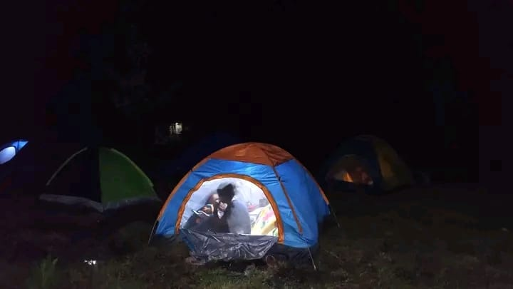

Tout ce qu'il faut savoir avant de préparer votre sac à dos pour Fénérive-Est et le lac Tampolo.

📝 Comment réserver un séjour à Green Camping Tampolo ?
Vous pouvez réserver directement via le formulaire de notre site. Pour les groupes, un devis est envoyé sous 24h. La réservation est confirmée par un acompte de 30% (Délai de confirmation : 24 à 48h).
💳 Quelles sont les modalités de paiement ?
Le solde doit être réglé au plus tard le jour J. Nous acceptons : Espèces, MVola, Orange Money, Airtel Money ou virement bancaire. Un délai de 15 jours peut être accordé aux entreprises (sous convention).
⚠️ Quelle est la politique d'annulation ?
Vous bénéficiez d'un report gratuit jusqu'à 7 jours avant le séjour. En cas d'annulation liée à la météo (à notre initiative), un avoir intégral vous sera proposé.
⛑️ Le séjour est-il sécurisé ?
Absolument. Il y a un ratio strict de 1 guide (formé aux premiers secours) pour 10 à 12 participants. Un kit de sécurité et une trousse de soins nous accompagnent, et un briefing complet est réalisé avant chaque départ sur le circuit de Fénérive-Est.
🔋 Y a-t-il de l'électricité et internet sur place ?
Nous sommes en pleine nature pour déconnecter ! Toutefois, la base d'accueil dispose d'un accès de base (kits solaires / réseau limité) en cas d'urgence.
🎒 Que faut-il emporter ?
Nous recommandons : chaussures de randonnée, vêtements confortables, gourde, crème solaire, anti-moustiques, lampe frontale et sac de couchage. Le reste du matériel de camping est fourni par Green Camping Tampolo.
📍 Où se trouve le point de rendez-vous ?
Le point de rendez-vous est à Fénérive-Est, à proximité du lac Tampolo. Les coordonnées GPS exactes vous seront communiquées lors de la confirmation de votre réservation.